Lab 2 — Sensors: Giving a Robot the Ability to "See" and "Feel" (Student Guide)
Adapted from HKUST ISDN 2602 (Spring 2025) Laboratory 2 for secondary school students.
Original course info — GitHub Classroom: https://classroom.github.com/a/67yXOYYA · Deadline: 23:59, 1 Oct 2025
1. Overview and Learning Outcomes
This laboratory works with a small robotic car. By the end you will be able to:
- Explain what a microcontroller (ESP32) is — the "brain" of the car
- Use the Arduino IDE to write and upload code to the car
- Measure distance with an ultrasonic sensor
- Read motion with an Inertial Measurement Unit (IMU)
- Reduce noise in sensor data with filters
Key words: microcontroller · sensor · ultrasonic · echo · accelerometer · gyroscope · noise · filter · sensor fusion
2. Background
2.1 The Robotic Car
The car used in this laboratory has wheels, motors, sensors, and one central component: the microcontroller.
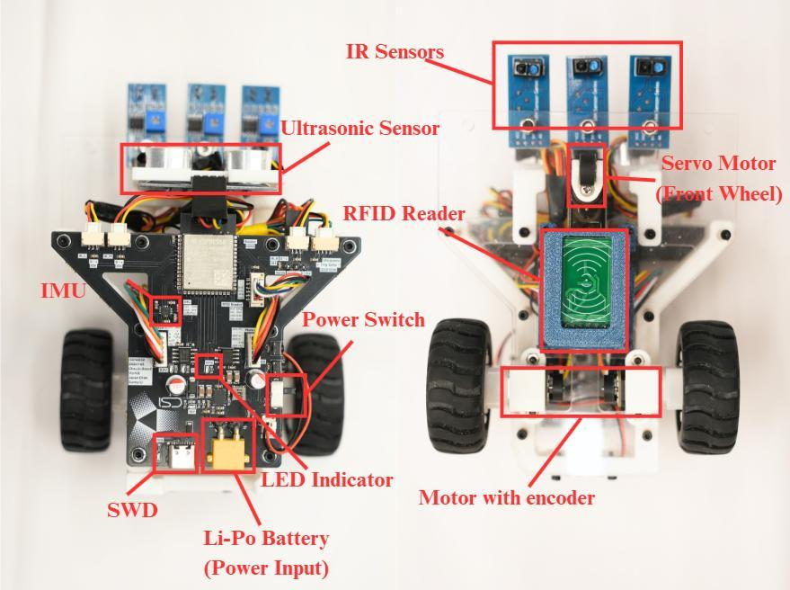
The composition of the robotic carThe materials for Tasks 1 and 2 (ultrasonic sensor, IMU board, cables, and the car chassis):
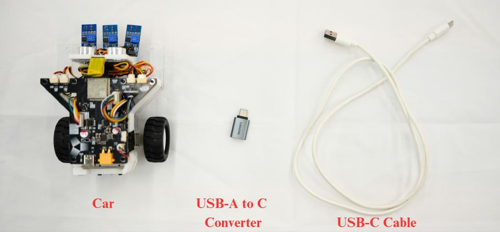
Materials for Tasks 1 & 22.2 What Is a Microcontroller?
A microcontroller is a small, complete computer on a single chip. It is far less powerful than a laptop, but it is:
- Inexpensive and small — it fits on a palm
- Well suited to reading sensors and controlling motors
- Highly power-efficient — it can run on a small battery
This car uses the ESP32-S3, made by Espressif. Although smaller than a coin, it provides:
- A processor running at 240 MHz (fast enough to run code thousands of times per second)
- Built-in Wi-Fi and Bluetooth (Wi-Fi is used in a later lab)
- Many GPIO pins — the metal legs of the chip, which can read signals from sensors or send signals to motors
In this analogy, the ESP32 is the brain, the sensors are the eyes and ears, and the motors are the muscles.
2.3 What Is the Arduino IDE?
IDE stands for Integrated Development Environment — the application in which code is written. The Arduino IDE supports three steps:
- Write a sketch (the Arduino term for a program) in the C++ language
- Check it for errors (compile)
- Upload it to the ESP32 through a USB cable
Every Arduino sketch has two essential parts:
void setup() {
// Runs ONCE when the board powers up — used for initial settings
}
void loop() {
// Runs FOREVER, repeatedly — used for reading sensors
}2.4 What Is a Sensor?
A sensor converts a physical quantity from the real world (distance, motion, light, temperature...) into an electrical signal the microcontroller can read. An important property of sensors:
No sensor is perfect. Real sensor data always contains random variation, called noise. This laboratory introduces filtering, the standard technique for reducing it.
Two sensors are used in this lab: the ultrasonic sensor (distance) and the IMU (motion).
3. Setting Up the Arduino IDE
The ESP32-S3 board on the car is not in Arduino's default board library, so the settings must be configured carefully. Otherwise, the serial port and the flash memory may not work correctly. Follow these steps exactly:
Step 1. Open the Arduino IDE. Go to Tools → Board → esp32 and choose "ESP32S3 Dev Module".
Step 2. Then, still under the Tools menu, set every option to match this table:
| Setting | Value |
|---|---|
| USB CDC On Boot | Enabled |
| CPU Frequency | 240MHz (WiFi) |
| Core Debug Level | None |
| USB DFU On Boot | Disabled |
| Erase All Flash Before Sketch Upload | Disabled |
| Events Run On | 1 |
| Flash Mode | QIO 80MHz |
| Flash Size | 8MB (64Mb) |
| JTAG Adapter | Disabled |
| Arduino Runs On | 1 |
| USB Firmware MSC On Boot | Disabled |
| Partition Scheme | No OTA (2MB APP/2MB SPIFFS) |
| PSRAM | Disabled |
| Upload Mode | USB-OTG CDC (TinyUSB) |
| Upload Speed | 921600 |
| USB Mode | Hardware CDC and JTAG |
| Zigbee Mode | Disabled |
 What the Tools menu should look like when everything is set correctly
What the Tools menu should look like when everything is set correctly
Step 3. Connect the car with the USB cable. Under Tools → Port, select the port that appears.
Verification: if a port appears after the USB cable is connected, the settings are very likely correct.
4. Task 1 — Ultrasonic Sensor: Measuring Distance with Sound
4.1 Background: Echolocation
Bats navigate by emitting high-pitched sounds and listening for the echo reflected from obstacles: a quickly returning echo indicates a nearby obstacle; a slowly returning echo indicates a distant one.
The HC-SR04 ultrasonic sensor operates on the same principle:
 How the ultrasonic sensor works: send a sound pulse, wait for the echo
How the ultrasonic sensor works: send a sound pulse, wait for the echo
The complete workflow:
- Transmission — the sensor's transmitter emits ultrasonic sound waves (above 20 kHz — too high-pitched for human hearing).
- Propagation — the sound waves travel through the air toward the target object.
- Reflection — when the waves hit an object, they bounce back.
- Reception — the sensor's receiver detects the reflected waves (the echo).
- Time measurement — the sensor measures the time between sending the sound and receiving the echo.
- Distance calculation — using the speed of sound, the distance is:
$$ Distance=\frac{Speed\ of\ sound \times Time\ interval}{2} $$
- Output — the distance value is sent to the microcontroller, which can use it for obstacle avoidance, object detection, and similar purposes.
Why divide by 2? The sound travels to the object and back — twice the one-way distance. Dividing by 2 yields the distance to the object.
Speed of sound: approximately 343 m/s in air at room temperature.
Worked example: suppose the echo returns after 588 microseconds (µs).
Time = 588 µs = 0.000588 s → Distance = (343 × 0.000588) / 2 ≈ 0.1 m = 10 cm.
4.2 Wiring — The PCB Pinout
The ultrasonic sensor is connected to the car's PCB (printed circuit board). This diagram shows which pins carry the trigger (send) and echo (receive) signals:
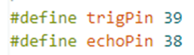
Pinout of the PCB for the ultrasonic sensor — check which GPIO pins are used for Trig and Echo4.3 Step-by-Step Instructions
Step 1 — Open the code.
Open the file Task_1.ino in the Arduino IDE (in the downloaded lab folder).
Step 2 — Check the pin definitions. They should match the pinout above:
#define trigPin 39 // GPIO pin that SENDS the ultrasonic pulse
#define echoPin 38 // GPIO pin that WAITS for the echo to returnStep 3 — Define the speed of sound (in m/s):
#define SOUND_SPEED 343 // speed of sound in air, in metres per secondStep 4 — Modify the distance equation so it uses the speed of sound correctly:
distance = (duration * SOUND_SPEED) / 2; // duration in seconds → distance in metresNote: divide by 2 because the sound travels to the object and back.
Step 5 — Upload. Click the Upload button (→ arrow) in the Arduino IDE and wait for "Upload complete".
Step 6 — Open the Serial Monitor. Click the magnifying-glass button (top right) and set the speed (baud rate) to 115200. Distance values should print once per second:
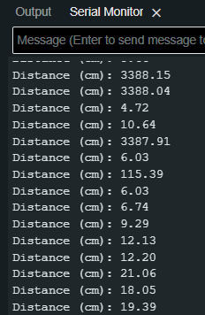
Expected result: the Serial Monitor printing distance valuesStep 7 — Test the accuracy. Point the sensor at a wall or a box and compare the printed value with a ruler measurement.
Step 8 — Record your measurements. Choose three objects (or three distances) to measure, and enter the values in the table:
| # | The object you measured | Value |
|---|---|---|
| 1 | ||
| 2 | ||
| 3 |
Commit the code to the GitHub Classroom repository, and show the result to the TA / instructor.
4.4 Appendix — The Full Example Code, Explained Line by Line
The complete example program, with comments explaining each line:
#define trigPin 16 // trigger pin (example pin numbers)
#define echoPin 15 // echo pin
#define SOUND_SPEED 340 // speed of sound (m/s)
long duration; // stores the time the sound wave takes to travel to the obstacle and back (µs)
float distance; // stores the calculated distance (m)
void setup() {
Serial.begin(115200); // start serial communication at 115200 baud
pinMode(trigPin, OUTPUT); // trigger pin sends signals → OUTPUT
pinMode(echoPin, INPUT); // echo pin receives signals → INPUT
Serial.println("Ultrasonic Sensor is set");
delay(10); // wait 10 ms for things to stabilise
}
void loop() {
// --- Send a 10 µs ultrasonic pulse ---
digitalWrite(trigPin, LOW);
delayMicroseconds(2); // clear any previous signal
digitalWrite(trigPin, HIGH);
delayMicroseconds(10); // keep the pin HIGH for 10 µs — the "shout"
digitalWrite(trigPin, LOW); // end the pulse
// --- Listen for the echo ---
duration = pulseIn(echoPin, HIGH); // time (µs) the echo pin stays HIGH
// --- Calculate distance ---
distance = (duration * SOUND_SPEED / 100) / 2; // ÷100 converts µs·(m/s) into cm
// --- Print the result ---
Serial.print("Distance (cm): ");
Serial.println(distance / 100);
delay(1000); // measure once per second
}5. Task 2 — IMU and 3D Visualization: Measuring Motion
5.1 Background: What Is Inside an IMU?
An IMU (Inertial Measurement Unit) is the sensor that reports a phone's orientation, keeps a drone level, and senses the motion of a game controller. It combines two (or three) sensors in one chip:
- Accelerometer — measures linear acceleration
ain m/s². Even at rest, it senses the pull of gravity (≈ 9.81 m/s², pointing toward the centre of the Earth); this is how it determines the direction of "down". - Gyroscope — measures angular velocity
ω(the rate of rotation) in degrees/sec. - Magnetometer (optional) — measures magnetic field strength in µT or Gauss, functioning as a digital compass.
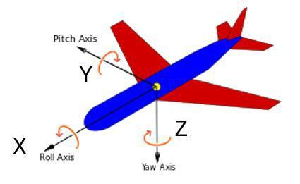
To track orientation, we need to know the car's rotation around the X, Y and Z axes5.2 Background: How Do We Get Orientation (Angles)?
The car's roll (tilting left/right), pitch (tilting forward/back) and yaw (turning left/right) are required. Each sensor alone can provide an estimate:
Method 1 — Integrate the gyroscope. Knowing how fast and for how long the device rotates, the angle follows by integration:
$$ \theta(t)=\theta_{0}+\int_{0}^{t} \omega(\tau)\, d\tau $$
Method 2 — Use the accelerometer and gravity. When the device is still (or moving smoothly), the accelerometer measures mainly gravity. From how gravity splits across the X, Y, Z axes, the tilt angles follow:
$$ Roll=\phi=\arctan\!\left(\frac{a_z}{a_y}\right) $$
$$ Pitch=\theta=\arctan\!\left(-\frac{a_x}{\sqrt{a_y^{2}+a_z^{2}}}\right) $$
5.3 Background: Sensor Limitations
| Sensor | Strengths | Weakness |
|---|---|---|
| Gyroscope | Fast, smooth, no noise | Drifts over time |
| Accelerometer | Stable long-term, no drift | Noisy, affected by motion |
Gyroscope drift: integration accumulates small errors — after a minute, the estimated angle drifts away from the true angle even when the car is stationary.
Accelerometer noise: every bump and vibration disturbs the reading, but averaged over a long period it indicates the true direction of gravity.
5.4 Background: Filters — Combining Two Limited Sensors into One Reliable Estimate
A. Low-Pass Filter (smoothing)
- Purpose: removes high-frequency noise from the accelerometer data.
- Why it works: gravity is a constant (low-frequency) signal, while noise vibrates fast (high-frequency). A low-pass filter keeps the slow part and discards the fast part — like averaging repeated measurements to reveal the underlying trend.
- Limitation: filtering too aggressively introduces lag — the value reacts slowly to real changes.
How it works, with numbers: at each step, the new reading is blended with the previous filtered value:
$$ filtered = \alpha \times new\_reading + (1-\alpha) \times filtered_{old} $$
Example: α = 0.3, old filtered value = 10, new reading = 20 → new filtered value = 0.3 × 20 + 0.7 × 10 = 13. The value moves smoothly toward the reading instead of jumping.
B. Complementary Filter (sensor fusion)
- Purpose: combine the strengths of both sensors — this is called sensor fusion.
- The gyroscope handles short-term, fast changes (it is smooth and quick).
- The accelerometer handles long-term correction (it does not drift, so it pulls the estimate back toward the truth).
$$ angle = \alpha \times (\text{gyro estimate}) + (1-\alpha) \times (\text{accelerometer estimate}) $$
The car's IMU chip is the ICM-42688-P (a 6-axis MEMS sensor = accelerometer + gyroscope):
The ICM-42688-P chip and its X/Y/Z axis orientation
5.5 The Skeleton Code
The lab provides Task_2.ino with most of the implementation supplied. The important pieces follow (also shown in the original manual's screenshots).
Initialization of the ICM-42688-P over I2C — I2C is a two-wire protocol that chips use to communicate:
// I2C IMU instance
ICM42688 IMU(Wire, 0x68, IMU_SDA, IMU_SCL);
void setup() {
Serial.begin(115200);
while (!Serial) {}
int status = IMU.begin();
if (status < 0) {
Serial.println("IMU initialization unsuccessful");
Serial.println("Check IMU wiring or try cycling power");
Serial.print("Status: ");
Serial.println(status);
while (1) {} // stop here if the IMU is not found
}
IMU.setAccelFS(ICM42688::gpm8); // accelerometer range: ±8 g
IMU.setGyroFS(ICM42688::dps500); // gyroscope range: ±500 degrees/sec
IMU.setAccelODR(ICM42688::odr12_5); // accelerometer sampling rate
IMU.setGyroODR(ICM42688::odr12_5); // gyroscope sampling rate
Serial.println("---IMU Initialized---");
}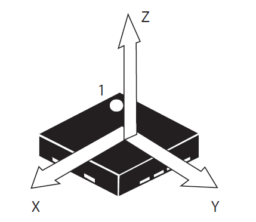
Initializing the IMU (screenshot from the manual)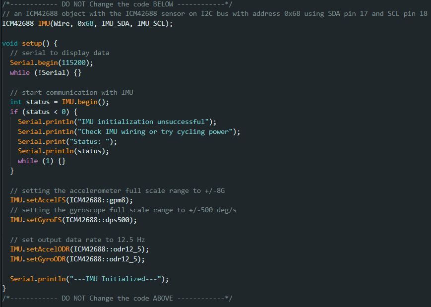
Reading raw data from the IMU (screenshot from the manual)Filter parameters and the filter function:
// Low-pass filter constants — note that alpha + beta = 1
const float LowPassFilterAlpha = 0.3f;
const float LowPassFilterBeta = 0.7f;
// --- Low-pass filter the accelerometer ---
filteredAccX = LowPassFilterAlpha * (IMU.accX()) + (1 - LowPassFilterAlpha) * filteredAccX;
filteredAccY = LowPassFilterAlpha * (IMU.accY()) + (1 - LowPassFilterAlpha) * filteredAccY;
filteredAccZ = LowPassFilterAlpha * (IMU.accZ()) + (1 - LowPassFilterAlpha) * filteredAccZ;
// --- Low-pass filter the gyroscope (also convert degrees → radians) ---
filteredGyroX = LowPassFilterBeta * (IMU.gyrX()) * DEG_TO_RAD + (1 - LowPassFilterBeta) * filteredGyroX;
filteredGyroY = LowPassFilterBeta * (IMU.gyrY()) * DEG_TO_RAD + (1 - LowPassFilterBeta) * filteredGyroY;
filteredGyroZ = LowPassFilterBeta * (IMU.gyrZ()) * DEG_TO_RAD + (1 - LowPassFilterBeta) * filteredGyroZ;
// --- Estimate roll/pitch from the accelerometer (gravity direction) ---
float acc_roll = atan2(filteredAccY, sqrt(filteredAccX * filteredAccX + filteredAccZ * filteredAccZ));
float acc_pitch = atan2(-filteredAccX, sqrt(filteredAccY * filteredAccY + filteredAccZ * filteredAccZ));
// --- Integrate the gyroscope to get angles (dt = 0.01 s per loop) ---
float gyro_roll = roll + filteredGyroX * dt;
float gyro_pitch = pitch + filteredGyroY * dt;
float gyro_yaw = yaw + filteredGyroZ * dt;
// --- Complementary filter: trust the gyro short-term, the accelerometer long-term ---
roll = ComplementaryFilterALPHA * gyro_roll + (1 - ComplementaryFilterALPHA) * acc_roll;
pitch = ComplementaryFilterALPHA * gyro_pitch + (1 - ComplementaryFilterALPHA) * acc_pitch;
yaw = gyro_yaw; // no accelerometer correction for yaw (gravity gives no yaw information)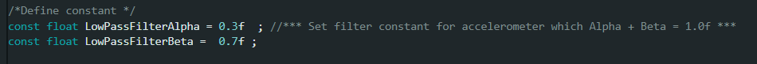
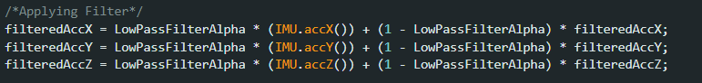
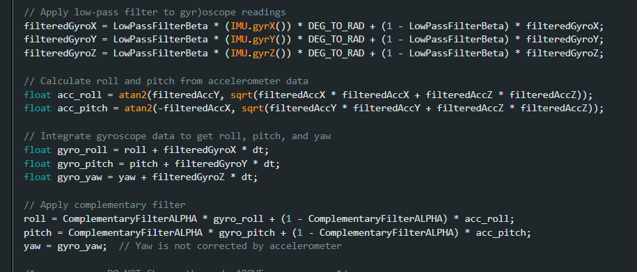
The filter code as it appears in the original manualDisplay mode switches — these two lines are switched on/off during the experiment:
bool Filter = true; // true = enable the filters
bool SerialPlotGrapgh = false; // true = also print data for the Serial Plotter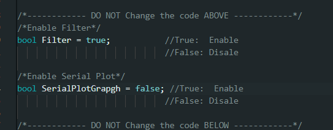
Display mode settings (screenshot from the manual)5.6 Step-by-Step Instructions
Step 1. Open Task_2.ino (in the Task 2 folder) in the Arduino IDE.
Step 2. Disable both the Serial Plot and the filters (set Filter = false).
Step 3. Upload the sketch to the board.
Step 4. Open the Chrome browser and visit https://imu.isdn2602.site. Click "Open Port" and choose the port connected to the development board. The sensor values and a 3D object labelled "ISDN 2602" should appear:
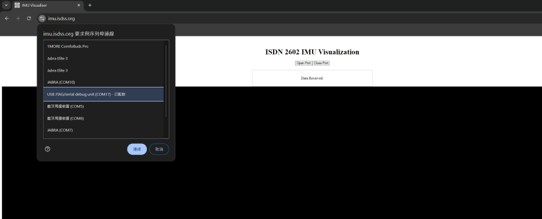
The web app showing the live IMU values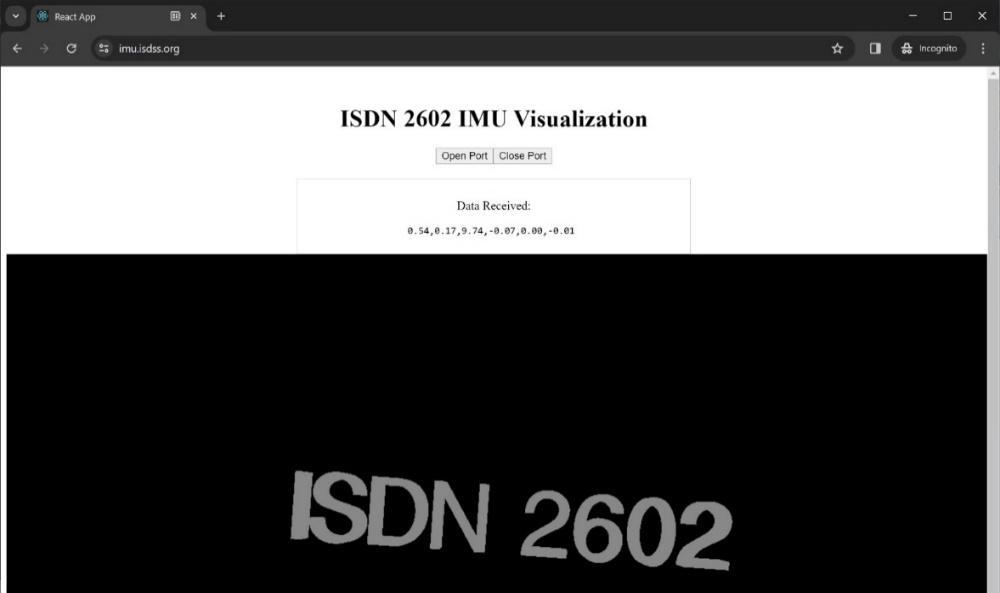
The mapped object moves as the car movesStep 5. Pick up the car, move it, and rotate it. Observe how the values change and how the 3D object follows the movement. The motion appears jumpy — this is the noise.
Step 6. Change the code to activate only the Low-Pass Filter. Upload again and observe: the movement should be smoother, possibly with a slight lag.
Step 7. Activate both the Low-Pass Filter and the Complementary Filter. Observe the result: smooth and stable.
Step 8. Enable the Serial Plot (SerialPlotGrapgh = true) and open the Arduino Serial Plotter (Tools → Serial Plotter) to see the data drawn as live curves. Repeat Steps 6 and 7 and compare the curves.
Commit the code to the GitHub Classroom repository, and show the result to the TA / instructor.
6. Appendix — Extra Explanations from the Manual
6.1 Reference: pulseIn, digitalWrite and pinMode
| Function | What it does |
|---|---|
pinMode(pin, OUTPUT/INPUT) |
Configures the ESP32 pin to send or receive electricity |
digitalWrite(pin, HIGH/LOW) |
Sets a pin to 3.3 V (HIGH) or 0 V (LOW) |
pulseIn(pin, HIGH) |
Times how long the pin stays HIGH — the echo time |
delay(ms) / delayMicroseconds(µs) |
Pauses the program for some milliseconds / microseconds |
Serial.print() |
Sends text to the computer via the Serial Monitor |
6.2 The appendix code screenshots from the original manual
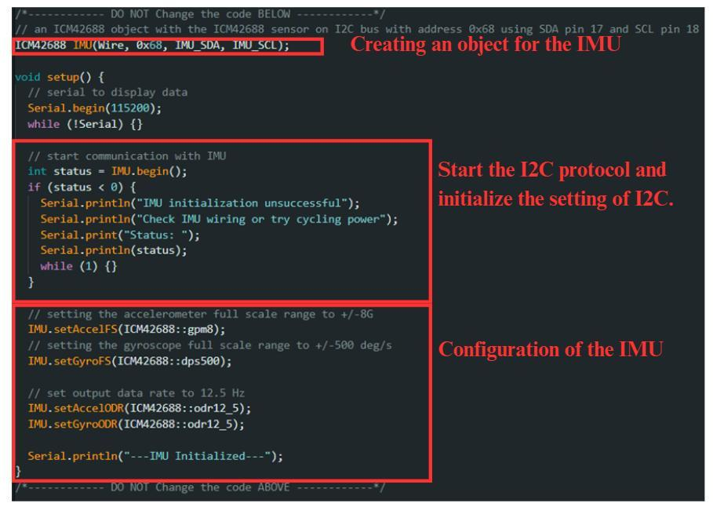
Appendix: initialization of the I2C channel and configuration of the IMU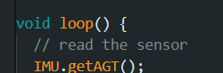
Appendix: the function that reads all data from the IMU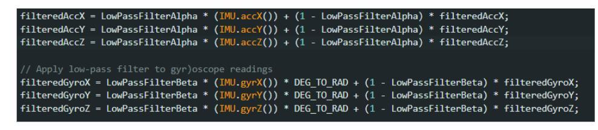
Appendix: the Low-Pass Filter in C++ (Alpha and Beta = 1 − Alpha)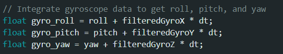
Appendix: integrating the gyroscope data (multiply by dt = 0.01 s)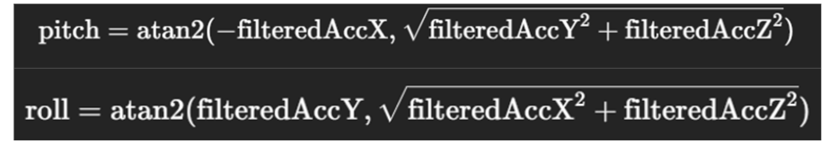
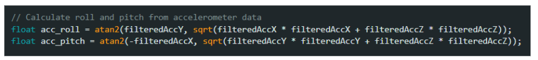
Appendix: the pitch/roll equations and their C++ implementation— End of Lab 2 —